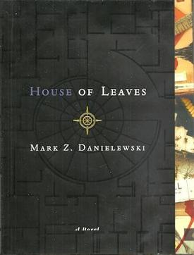

House of Leaves is a critically acclaimed novel that challenges the traditional structure of storytelling through its unconventional formatting and complex narrative. Its unique approach to storytelling can be compared to the performance of a skilled artist, pushing the boundaries of what is expected and leaving a lasting impression on its audience.
What I love about House of Leaves is how it immerses the reader in a world of mystery and intrigue. The story is full of unexpected twists and turns that keep you on the edge of your seat, and the unconventional formatting adds to the overall sense of disorientation and unease. It's a book that challenges you to think outside the box and question your own perceptions of reality, and I find that incredibly compelling.
| Authors within the meta-narrative | |
|---|---|
| Author | What they wrote in the meta-narrative |
| Mark Z. Danielewski | Author of the physical book House of Leaves |
| Johnny Truant | Editor and writer of the majority of footnote space in Zampanó's House of Leaves |
| Zampanó | Author of House of Leaves, a canonically metafictitious paper on Will Navidson's film(s) |
| Will Navidson | Photographer and amateur filmmaker of the house on Ash Tree Lane |
| King Minos | The Minotaur |
here is an image of the book's cover:
here is an image of the film adaptation's cover:

here's a random horizontal rule and line break:
have fun (: